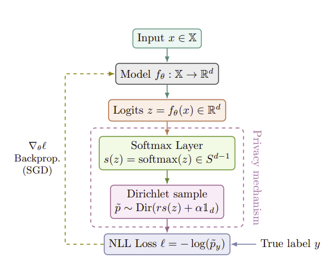
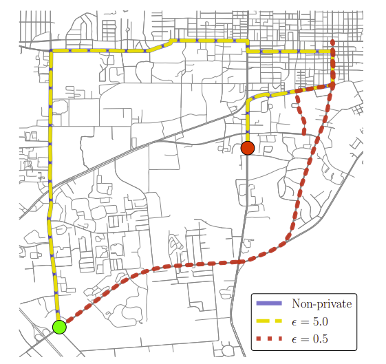
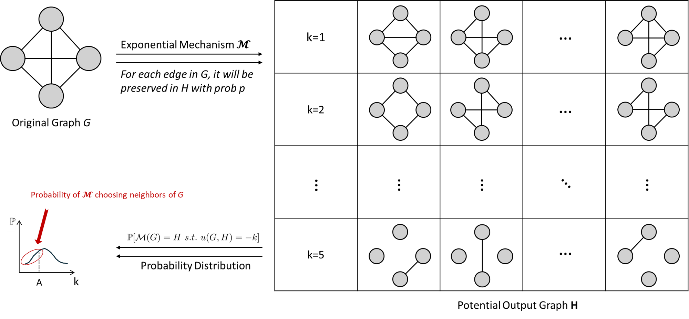
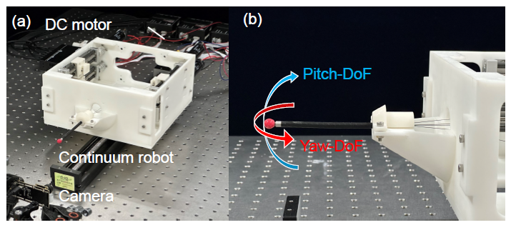
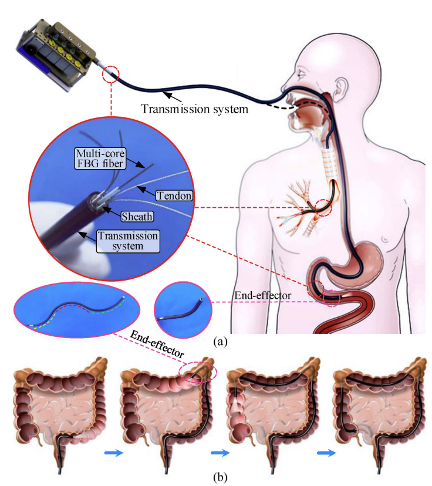
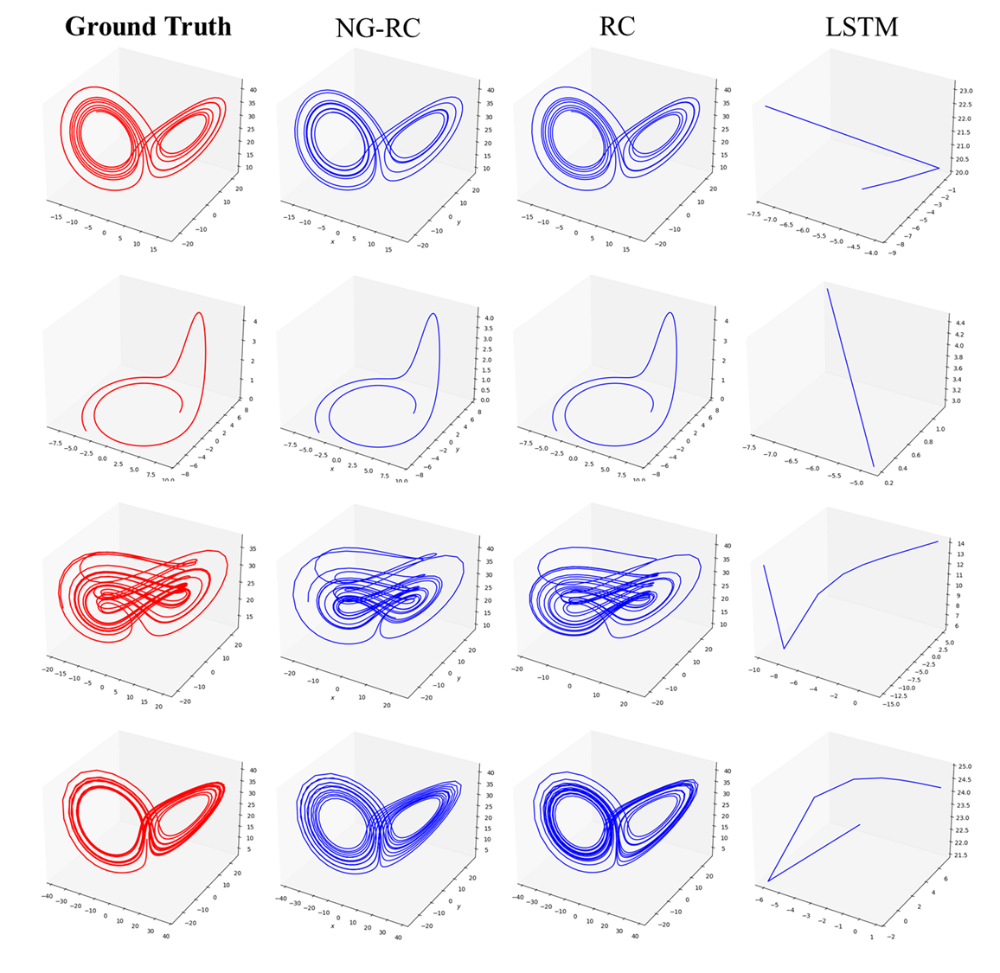
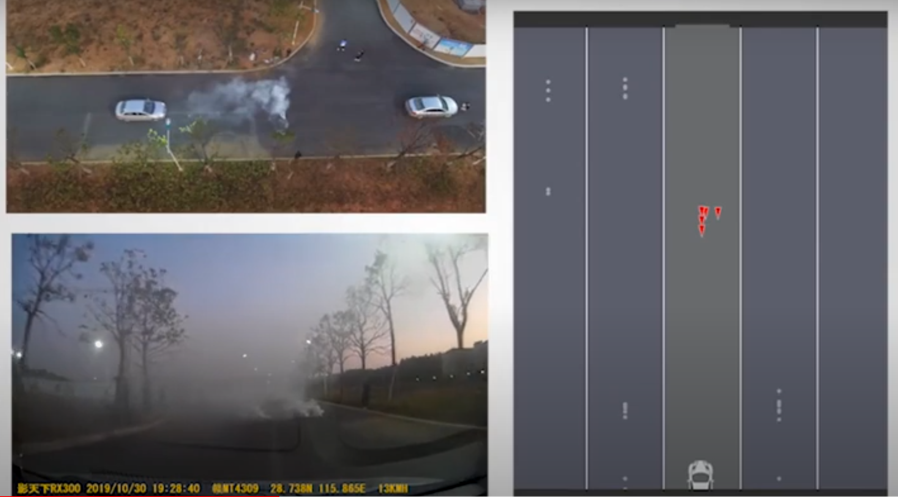
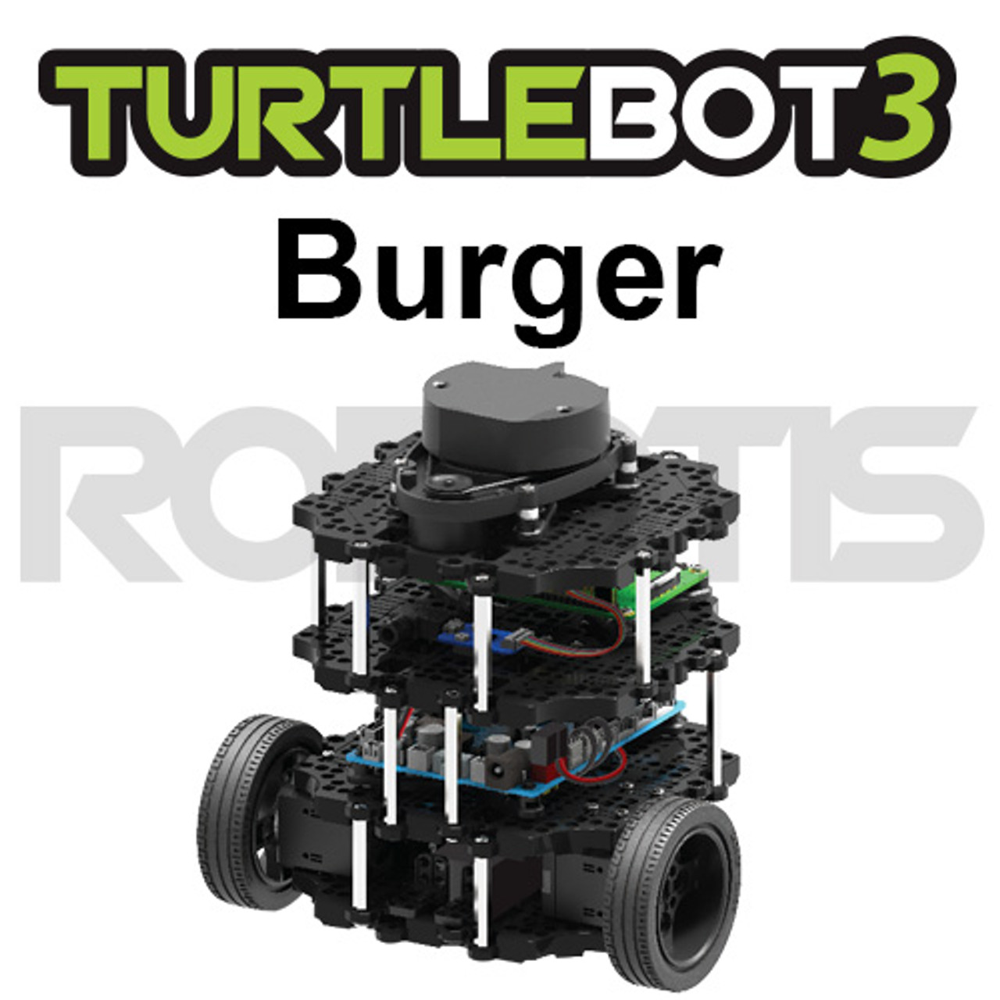
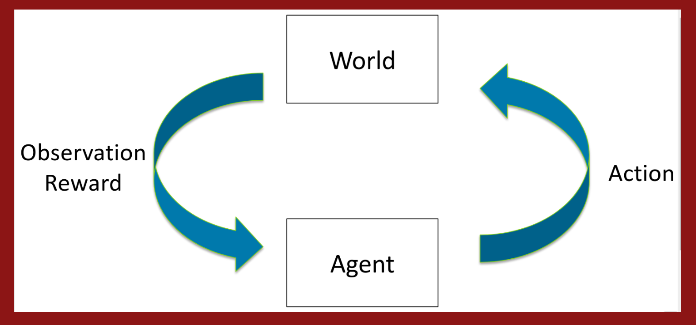

{kind=link}

End-to-End Differential Privacy in Training Deep Neural Network Classifiers
Journal of Machine Learning Research (JMLR), Submitted, 2026
I'm currently a second-year Ph.D student in Electrical and Computer Engineering (ECE) at Georgia Institute of Technology (2025–Present) advised by Prof. Matthew Hale. Prior to this, I received my Master degree in ECE from Georgia Tech (2022–2024) and B.Eng. degree in Automation from East China Jiaotong University (2018–2022). I've spent time at CUHK(SZ) Robotics & AI Lab (2023).
Email / LinkedIn / GitHub / Google Scholar
My research interests lie primarily in Differential Privacy, Robotics, Control, Machine Learning and Optimization. (* indicates equal contribution)

Journal of Machine Learning Research (JMLR), Submitted, 2026

IEEE Conference on Decision and Control (CDC), Accepted, 2026

American Control Conference (ACC), Accepted, 2026

IEEE/ASME International Conference on Advanced Intelligent Mechatronics (AIM), 2025

IEEE Transactions on Robotics, 2025

Nonlinear Science and Control Engineering, 2025

BuzzBlimps, 2024, Advisor: Matthew Hale
This work mainly deploys custom YOLOv5 model on RK3588 series NPU using multithreading, which runs a YOLOv5 model at 120 fps on OrangePi, and uses ROS2 to rossify the entire detection framework and integrate it with the blimp's position and rotation control.

Intelligent Driving Team, 2020–2022, Advisor: Yun Yang
This work develops the vehicle detection algorithm on the AWR1843-BOOST (Texas Instruments) platform, designed to operate in harsh environments. The system provides drivers with the distance and angle to the car ahead in real time.

Course Project, 2024 Spring
A collection of assignments for the ECE 7785 Introduction to Robotics Research course. These labs showcase fundamental robotics concepts such as image classification, controllers, state estimation, navigation, and mapping using the Turtlebot3 Burger platform.

Course Project, 2024 Summer
CS234 assignments completed independently, containing the foundational code for Policy/Value Iteration, PPO, DPO and RLHF.
I play in Georgia Tech Men's Basketball Club. I also played Shenzhen college basketball tournaments and Shenzhen X9 College Rowing tournaments in 2022 and 2023.